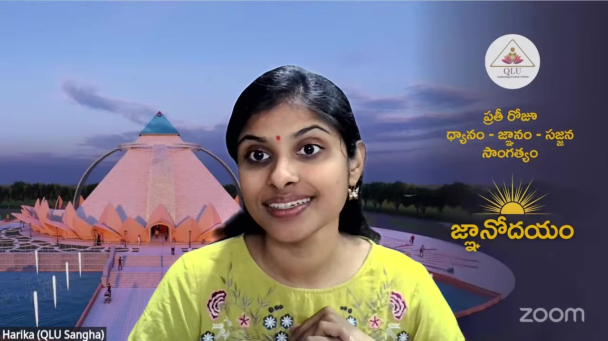

01 · ఈ నెల ఆధ్యాత్మిక జ్ఞానసారం · పూర్తి కథనం
సానుకూల మార్పుకు మనమే నాంది పలుకుదాం
జ్ఞానోదయం 543వ రోజు ప్రారంభంలో హారిక సూరి గారు Speak Peace శ్రేణి ద్వారా నేర్చుకుంటున్న Nonviolent Communication (NVC)ను హృదయాల మధ్య అనుసంధానానికి ఒక మార్గంగా పరిచయం చేశారు. మాటలు మాత్రమే కాకుండా, పరస్పరం నిజంగా కలిసినప్పుడు మాటలు అవసరం లేని అవగాహన కూడా సాధ్యమవుతుందని ఆమె భావించారు. డా. న్యూటన్ గారు, డా. లక్ష్మి గారితో పరిచయం తనలో నేర్చుకోవాలనే తపనను ఎలా పెంచిందో, QLU కార్యక్రమాల ద్వారా పొందిన జ్ఞానాన్ని జీవితంలో ఎలా అనుభవిస్తున్నారో వ్యక్తిగతంగా పంచుకున్నారు. ఈ భాగం ఆధ్యాత్మిక అధ్యయనాన్ని నిరంతర అంతర్ముఖ ప్రయాణంగా చూడమని ఆహ్వానిస్తుంది. అందుబాటులో ఉన్న క్యాప్షన్లలో ఈ పరిచయం తరువాత ఎక్కువ సమయం ధ్యాన సాధనకే కేటాయించబడింది.
ప్రసంగకర్త: Harika Suri
అంశం: Speak Peace — Creating Change
మూల వీడియో: https://www.youtube.com/watch?v=8EbjzA7sgUI
హృదయం నుంచి హృదయానికి సంభాషణ
Speak Peace శ్రేణిలో Marshall Rosenberg గారి Nonviolent Communication గురించి చర్చ కొనసాగుతోందని హారిక గారు తెలిపారు. మన హృదయంలో ఉన్న విషయాన్ని ఎదుటివారి హృదయానికి చేరేలా ఎలా చెప్పాలి, నిజంగా ఎలా అనుసంధానమవ్వాలి అనే ప్రశ్న ఈ అధ్యయనానికి కేంద్రంగా ఉందని వివరించారు. ఈ పద్ధతి వినడానికి సులువుగా అనిపించినా ఆచరణలో పెట్టడం కొన్నిసార్లు కష్టమవుతుందని ఆమె అంగీకరించారు. అయితే దానిని జీవితంలో అనుభవించినప్పుడు దాని విలువ మరింత స్పష్టమవుతుందని చెప్పారు.
మాటలకు మించిన అనుబంధం
ఇద్దరి మధ్య నిజమైన అనుసంధానం ఏర్పడినప్పుడు ప్రతిసారి మాటలే అవసరం ఉండవని వక్త సూచించారు. ఆమె దృష్టిలో NVC కేవలం కొన్ని సంభాషణ సూత్రాల సమాహారం కాదు; మనిషిని మరొక మనిషికి దగ్గర చేసే లోతైన అవగాహన. ఆధ్యాత్మికత అనే పదాన్ని ముందుకు తేవకుండానే Rosenberg గారి బోధనల్లో ఆధ్యాత్మిక జ్ఞానం కనిపిస్తోందని ఆమె తన అభిప్రాయంగా వ్యక్తపరిచారు. ఇది వక్త చేసిన ఆధ్యాత్మిక వ్యాఖ్యానం; పుస్తకం నుంచి నేరుగా ఇచ్చిన ఉల్లేఖనం కాదు.
విద్య గురించి తన అవగాహనలో వచ్చిన మార్పు
తనను తాను పరిచయం చేసుకుంటూ హారిక గారు QLUతో చాలాకాలంగా అనుబంధం ఉందని చెప్పారు. మొదటిసారి డా. న్యూటన్ గారు, డా. లక్ష్మి గారి మాటలు విన్నప్పుడు తనకు అప్పటివరకు తెలిసిన చదువుకంటే నేర్చుకోవలసింది ఇంకా ఎంతో ఉందనే భావన కలిగిందని గుర్తుచేసుకున్నారు. డిగ్రీ పూర్తయిన తరువాత విద్య ముగిసిందనే భావన నుంచి, నిజమైన అధ్యయనం ఇప్పుడే ప్రారంభమవుతోందనే భావనకు తాను వచ్చిన మార్పును వివరించారు.
వర్క్షాప్ల ద్వారా పెరిగిన అన్వేషణ
Past Life Regression వర్క్షాప్లో కలలు, ఆత్మ ఎదుగుదల దశలు, Astral Travel వంటి అంశాల గురించి విన్నానని ఆమె చెప్పారు. ఇవన్నీ తనకు అప్పటివరకు పరిచయం లేని విషయాలుగా అనిపించాయని, మరింత తెలుసుకోవాలనే ఆసక్తి పెరిగిందని వివరించారు. ఇక్కడ ఆమె తనకు కలిగిన ఆశ్చర్యాన్ని, వ్యక్తిగత అన్వేషణను పంచుకుంటున్నారు; ఆ అంశాలకు స్వతంత్ర శాస్త్రీయ నిర్ధారణ ఇచ్చినట్లు ఈ వ్యాసం భావించకూడదు.
కుటుంబ ప్రోత్సాహం, నేర్చుకునే నిర్ణయం
తల్లిదండ్రుల ద్వారానే డా. న్యూటన్ గారు, డా. లక్ష్మి గారు, Quantum Life University గురించి తెలుసుకున్నానని హారిక గారు పేర్కొన్నారు. కుటుంబం ప్రోత్సహించడంతో తాను, తన సోదరి కలిసి వర్క్షాప్లకు హాజరయ్యామని చెప్పారు. డిగ్రీ తరువాత వెంటనే పీజీ చదువుకు వెళ్లకుండా, కొంతకాలం ఈ కార్యక్రమాల్లో పాల్గొని నేర్చుకోవాలని నిర్ణయించుకున్నానని వివరించారు. ఆ నిర్ణయం తనకు నిరంతర అధ్యయనంపై ఉన్న ఆసక్తిని ప్రతిబింబిస్తుందని ఆమె మాటల నుంచి తెలుస్తుంది.
QLUతో అనుబంధం నుంచి జీవితానుభవం వరకు
వర్క్షాప్లు జరిగినప్పుడు మాత్రమే కాకుండా మిగిలిన సమయంలోనూ నేర్చుకోవాలనే కోరికతో Life Foundation కార్యాలయంలో చేరానని ఆమె గుర్తుచేసుకున్నారు. QLU క్యాంపస్ ప్రారంభమైన కాలాన్ని కూడా తన అనుభవంలో భాగంగా ప్రస్తావించారు. ఎన్నో సంవత్సరాలుగా నేర్చుకున్న విషయాలు తన జీవితంలో మార్పులకు ఎలా దోహదపడ్డాయో ఇతరులతో పంచుకుంటున్నానని చెప్పారు. అయితే తన ప్రయాణం పూర్తయిపోయిందని కాకుండా, అందరితో కలిసి తానూ ఇంకా నేర్చుకుంటున్నాననే వినయాన్ని వ్యక్తం చేశారు.
ధ్యానం ద్వారా జ్ఞానాన్ని స్వీకరించడానికి సిద్ధత
ప్రసంగ పరిచయం చివర్లో ధ్యానంతో మనసు తెరుచుకుంటుందని, అంతర్గత జ్ఞానంతో అనుసంధానం ఏర్పడుతుందని హారిక గారు తన ఆధ్యాత్మిక అవగాహనను వివరించారు. మనకు వినిపించే విషయాల్లో ఏది మన అంతరంగంతో అనుసంధానమవుతుందో తెలుసుకోవడానికి ధ్యానం తోడ్పడుతుందని ఆమె భావించారు. తరువాత శ్వాసను గమనించే ధ్యాన సాధనకు ఆహ్వానించారు. ఆ తరువాతి దీర్ఘమైన మార్గదర్శక ధ్యానం, సంగీతం, సంకల్ప సాధనను ఈ బోధన వ్యాసంలో విస్తరించి రాయలేదు.